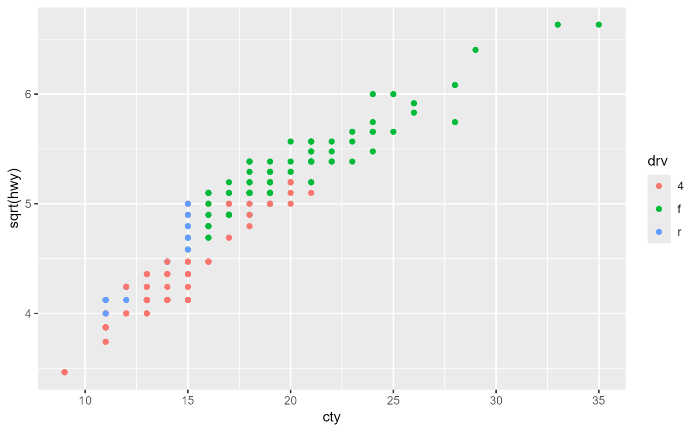

The with_pro() and aes_pro() functions
are standard-evaluated versions of the expression-evaluation functions
with and ggplot2::aes,
respectively.
These alternative functions are more programmatically friendly:
They use proper standard evaluation,
through the usage of one-sided formulas,
instead of non-standard evaluation,
tidy evaluation,
or similar programmatically unfriendly evaluations.
For creating formulas without capturing environments,
see form.
Arguments
- data
a list, environment, or data.frame.
- form
a one-sided formula giving the expression to evaluate in
with_pro.
If the formula has an environment, that environment is used to find any variables not present indata.- ...
arguments to be passed to
ggplot2::aes, but given as one-sided formulas.
Details
The aes_pro() function is the standard evaluated alternative to
ggplot2::aes.
Due to the way aes_pro() is programmed,
it should work even if the tidy evaluation technique
changes in 'ggplot2'.
To support functions in combinations with references of the variables,
the input used here are formula inputs, rather than string inputs.
See the Examples section below.
Note
The with_pro() function, like the original with function,
is made for primarily for convenience.
When using modelling or graphics functions with an explicit data argument
(and typically using formulas),
it is typically preferred to use the data argument of that function,
rather than to use either with(data, ...) or with_pro(data, ...).
Non-Standard Evaluation
Non-Standard Evaluation (sometimes abbreviated as "NSE"),
is somewhat controversial.
Consider the following example:
What package will be attached? It will not be 'ggplot2',
nor will an error occur.
Instead, the package 'aplot' will be attached.
This is due to evaluating the expression 'aplot' as a quoted expression,
instead of evaluating the contents (i.e. string or formula) of the variable.
In other words: Non-Standard Evaluation.
Regular Standard Evaluation does not have the above problem.
Standard evaluation in 'R' is not limited to atomic objects like character vectors;
formulas can also be used.
Examples
requireNamespace("ggplot2")
d <- import_data("ggplot2", "mpg")
# mutate data:
myform <- form(~ displ + cyl + cty + hwy)
d$mysum <- with_pro(d, myform)
summary(d)
#> manufacturer model displ year
#> Length:234 Length:234 Min. :1.600 Min. :1999
#> Class :character Class :character 1st Qu.:2.400 1st Qu.:1999
#> Mode :character Mode :character Median :3.300 Median :2004
#> Mean :3.472 Mean :2004
#> 3rd Qu.:4.600 3rd Qu.:2008
#> Max. :7.000 Max. :2008
#> cyl trans drv cty
#> Min. :4.000 Length:234 Length:234 Min. : 9.00
#> 1st Qu.:4.000 Class :character Class :character 1st Qu.:14.00
#> Median :6.000 Mode :character Mode :character Median :17.00
#> Mean :5.889 Mean :16.86
#> 3rd Qu.:8.000 3rd Qu.:19.00
#> Max. :8.000 Max. :35.00
#> hwy fl class mysum
#> Min. :12.00 Length:234 Length:234 Min. :33.70
#> 1st Qu.:18.00 Class :character Class :character 1st Qu.:43.10
#> Median :24.00 Mode :character Mode :character Median :50.15
#> Mean :23.44 Mean :49.66
#> 3rd Qu.:27.00 3rd Qu.:54.08
#> Max. :44.00 Max. :84.90
# plotting data:
x <- form("cty")
y <- form(~ sqrt(hwy))
color <- form(~ drv)
ggplot2::ggplot(d, aes_pro(x, y, color = color)) +
ggplot2::geom_point()
